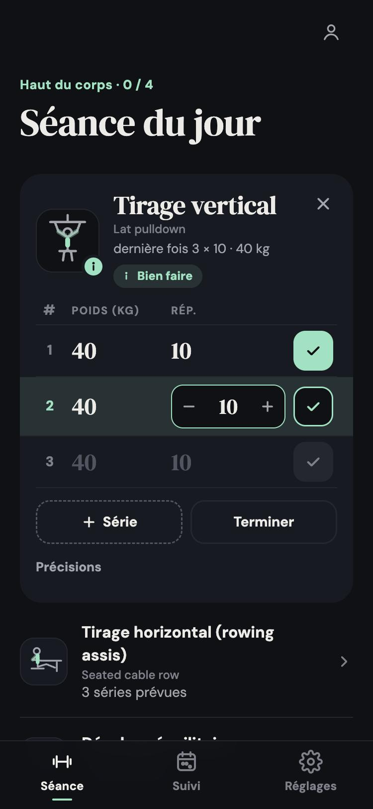
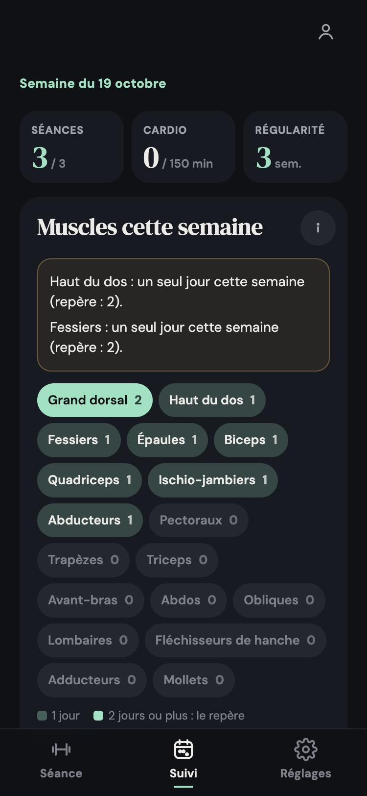
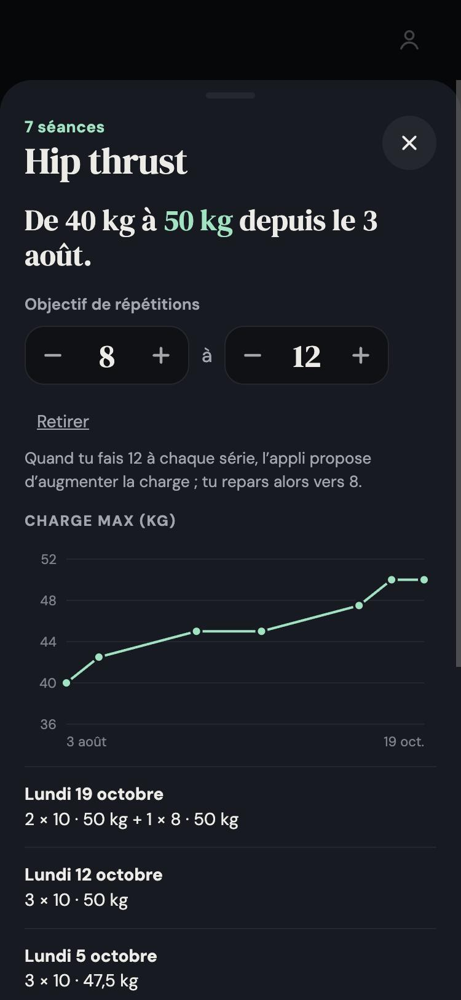

Tout est déjà rempli
Poids, répétitions, réglages de la machine, vitesse et pente : la séance reprend ce que tu as fait la dernière fois.
Tes séances de sport notées en un geste, et la réponse à une question simple : est-ce que je tiens le rythme ?
Pour suivre mes séances, je passais par une appli payante qui ne faisait jamais tout à fait ce que je voulais. Je voulais une appli qui retienne tout de la dernière fois, poids, répétitions et réglages de la machine, pour noter une série en un geste entre deux efforts, et qui me dise si je travaille vraiment les muscles que je vise.
Je l'ai fait tester autour de moi, et chaque retour a changé quelque chose : une prise en main plus guidée, des séries plus simples à régler, un suivi plus lisible. Elle est maintenant prête pour tout le monde.



Poids, répétitions, réglages de la machine, vitesse et pente : la séance reprend ce que tu as fait la dernière fois.
Enregistre une séance comme routine, puis relance-la d'un geste la fois suivante.
Un tableau des séries avec une coche par série ; poids et répétitions se règlent avec deux compteurs identiques.
Choisis les muscles à développer ou à ménager : les bons exercices passent en premier, les autres sont signalés.
Les jours travaillés pour chaque muscle et tes minutes de cardio, face aux repères de l'ACSM et de l'OMS.
Une courbe par exercice, et une suggestion de charge quand tu atteins ton objectif de répétitions.
Une figure qui montre le mouvement et les muscles travaillés, et des conseils tirés de sources fiables.
S'installe sur ton téléphone, fonctionne sans connexion à la salle, en français et en anglais.
C'est gratuit. La démo s'ouvre sur un compte d'exemple, avec douze semaines de séances : rien à créer.